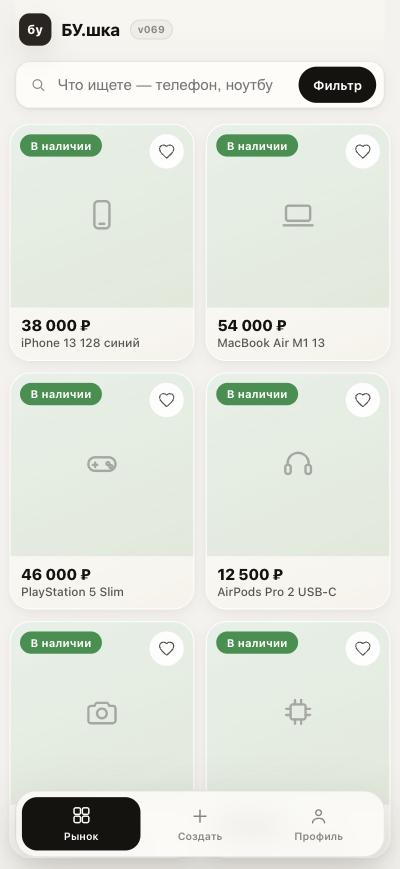
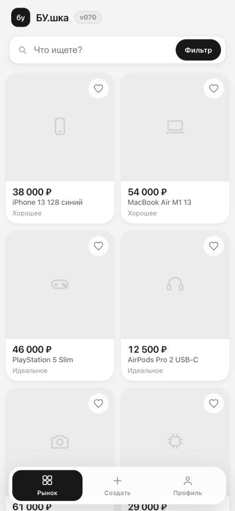
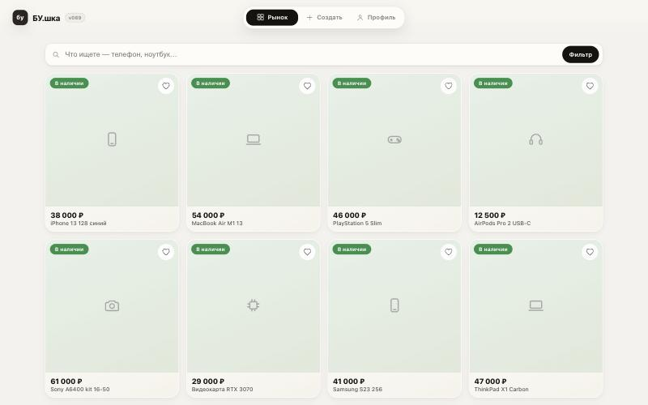
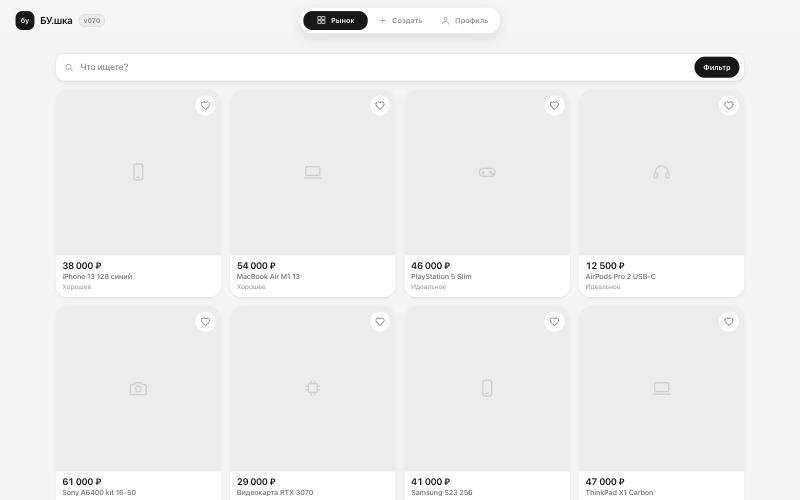

Зал почти без цвета, как у Apple: светло-серый фон, белая карточка, графитовые буквы. Единственный цвет во всём приложении остался у брони — чтобы его было видно сразу.
Телефон

БылоЗелёная плашка «В наличии» на каждой карточке, зелёная заливка плитки, кремовый фон

СталоЦена, название, состояние. Плитка ровно серая, цвета нет нигде
Мак

Былоv069

Сталоv070
Что поменялось внутри
ЦветФон #F5F5F7, карточка белая, буквы #1D1D1F. Янтарь остался только у брони — больше цветных пятен в приложении нет.
Плашка «В наличии» снятаЭто обычное состояние вещи, объявлять его цветом не нужно. Говорит только то, что надо заметить.
Шрифт как у AppleSF Pro: крупное — Display, текст — Text. Сняты заглавные с разрядкой и толщины, которых у SF нет.
Состояние вещи прямо на витрине«Хорошее», «Идеальное» — третьей строкой под названием. На других досках за этим надо открывать карточку.
Тёмная тема «Графит»Бывшая «Изумруд · золото» стала той же нейтралью, перевёрнутой в тёмное.
Отступы по сетке63 случайных значения вроде 7, 9, 13 пикселей приведены к шагу 4 — строки встали в одну линию.